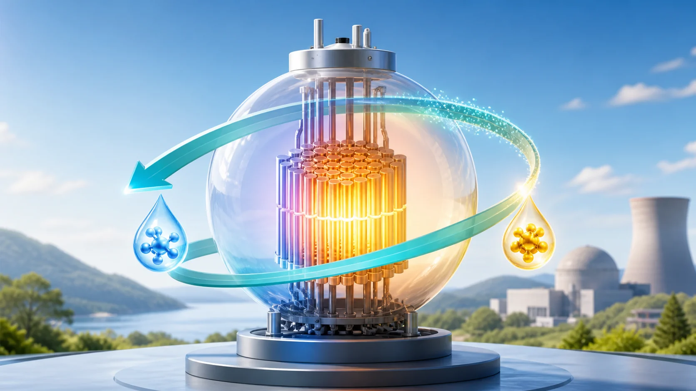
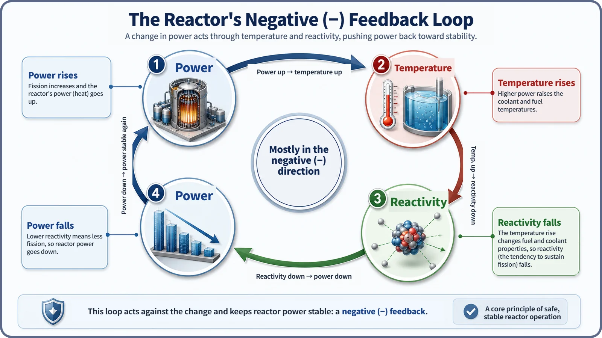

Reactor Kinetics & Reactivity · 117
Wobble on a Gym Ball and Your Body Reacts First — How Temperature Feedback Steadies a Reactor
Power, temperature and reactivity form a closed loop that mostly pushes back against change, an inherent tendency rather than an absolute safety device.

Temperature feedback is a reactor's built-in self-regulating loop: when power rises, the core heats up, and that temperature rise itself mostly acts to lower reactivity, holding the power increase back. No one has to judge or act for it to work. Commercial reactors are designed so the overall temperature coefficient is negative in the normal operating range, but it is an inherent tendency, not an absolute safety device.
A reactor that steadies itself
What if a reactor could bring its own power back down with nobody doing anything? No operator touching a control rod, no computer making a decision. It sounds odd, but reactors really do have this property. Today's topic is that property: temperature feedback.
A wobble on the gym ball, and the next instant
Ever tried to balance on a gym ball or a unicycle? When your body starts to tip to one side, what happens? You don't think, "I'm leaning right, so I should tense my left muscles," and then act. The instant you start to tip, before any thought, the muscles on the other side fire by reflex and pull you back to center. It isn't a decision. It's the body itself responding.
Reactors have a property that closely resembles this. Reactivity, as covered before, describes how far a reactor is from critical (balance). There is a physical path by which the reactor adjusts that reactivity on its own, without anyone moving a control rod: when power rises, the core's temperature rises, and that temperature rise itself acts to lower reactivity. Just as the body reacts the moment it tips, the reactor responds physically the moment its temperature climbs. This is called temperature feedback.
So what exactly happens inside the reactor?
Drawn as a loop that comes back on itself, it looks like this:
- Power rises → more heat is produced by fission.
- That heat raises the temperatures of the fuel, the moderator and the coolant. (The fuel responds first; the coolant and moderator follow a little later.)
- As temperatures rise, the properties of the core materials change (their density, how readily they interact with neutrons, and so on).
- Those changes affect the balance between neutrons being born and being lost, that is, the reactivity. In a normally designed reactor the effect is mostly in the negative (−) direction, so reactivity falls.
- With lower reactivity, the power rise is held back or power starts to come down again.
- As power falls, temperatures fall too, the effect on reactivity shrinks, and things settle near a new balance point.
Power → temperature → reactivity → (back to) power: four stages, each the cause of the next, form one closed loop. In gym-ball terms: the body tips (power rises) → the muscles respond (material properties change with temperature) → a restoring force appears (reactivity falls) → you return to a balanced stance (power steadies).

The relationship in one line
The link between how much temperature changes (ΔT) and how much reactivity changes as a result (Δρ) can be written very simply as:
Δρ (feedback) ≈ α × ΔT
Here α is the temperature coefficient: how much reactivity changes per degree of temperature change. Designing and operating commercial reactors so that α is negative in the normal operating range is one of the basic principles of safety design. In other words, when temperature rises (ΔT > 0), the reactivity change (Δρ) is negative and works to hold back the power increase.
In reality, several physical paths, including the fuel temperature itself, the moderator temperature and changes in coolant density, each contribute to reactivity at their own speed and size, and their sum makes up the overall temperature coefficient. Some respond almost the instant temperature rises; others follow more slowly because it takes time for the coolant to heat up. For today the big picture is enough: there are several paths, and together they act mostly in the negative direction.
Easily confused neighbors
Temperature feedback vs. reactivity control. Reactivity control (moving control rods or changing the boron concentration) is a deliberate, active change made by operators or automated drives. Temperature feedback is a passive physical effect that always operates, with no one touching anything, because material properties change. In a real reactor the two always work together.
Temperature feedback vs. scram. A scram (an emergency shutdown) drives the control rods fully in within moments, forcing a large, certain negative reactivity: an active emergency action. Temperature feedback is a passive, inherent response working quietly in the background even during normal operation. Neither replaces the other; they work at different levels and complement each other.
Temperature feedback vs. a home thermostat. A thermostat measures temperature, compares it with a set point and, based on that "judgment," switches the heating on or off: an active control device. Temperature feedback involves no judgment at all. The core materials simply respond to temperature the way their properties dictate. That difference, judgment or no judgment, is what separates "control" from "feedback."
But it isn't a cure-all
Negative temperature feedback is not "an absolute device that guarantees safety in every situation." It is more accurate to call it a physical tendency designed to act mostly in the negative direction within the normal operating range. Its size and speed can vary with reactor type, operating conditions and the state of the fuel.
You might think, "If every temperature rise is automatically held back, then any temperature rise is safe." That isn't right either. That temperature feedback tends to lower reactivity is a completely different matter from whether fuel and structures can tolerate unlimited temperature rise. Managing thermal margins and fuel integrity is outside today's scope.
It is also known that in some reactor types, under certain conditions, the direction or size of some feedback paths can differ; those details are beyond today's scope.
Links to design, operation and safety
Design. When choosing the materials and layout of a core, making the overall temperature coefficient negative across the normal operating range is treated as one of the basic requirements of safety design. It is counted as a core element of a reactor's inherent safety.
Operation. Even while power is changed on purpose, as in load following, temperature feedback is always at work in the background. The operator's reactivity control and the physical tendency of temperature feedback show up together, overlapping.
Safety. Thanks to temperature feedback, if power starts to rise unintentionally for any reason, its own physical tendency acts to ease the increase. It is not the only safety measure, though. Separate active and passive safety systems, such as the scram and multiple barriers, work alongside temperature feedback, each backing up the others. How these effects are combined quantitatively in safety analysis is a detailed topic of its own.
The short version
- Temperature feedback is a physical self-regulating loop: rising power raises core temperature, and that temperature rise mostly acts to lower reactivity, holding back the power increase.
- It is a closed loop, power → temperature → reactivity → power, and it works without any judgment, like a body regaining balance by reflex on a gym ball.
- It is a passive, inherent physical effect, distinct from active measures such as reactivity control (rods, boron) or a scram.
- Negative temperature feedback is not an absolute safety device but an inherent property designed to act mostly in the negative direction in the normal operating range, and it does not mean every temperature rise is safe.
Next come the individual paths that actually produce temperature feedback: the Doppler feedback that fuel temperature produces almost instantly, the effect of moderator temperature, and the effect of changes in coolant density.